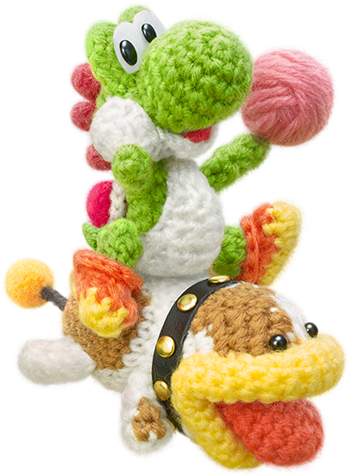
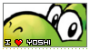
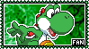
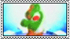
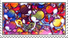
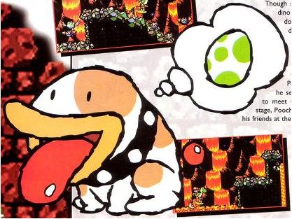
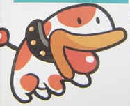
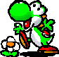
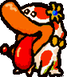
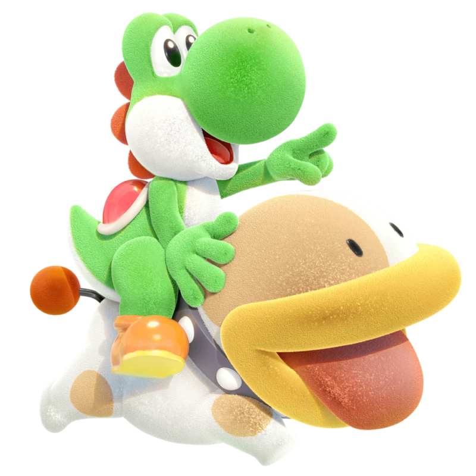

|
 |
Yoshi & Poochy
Where to start with these two! Yoshi and Poochy have been two of my biggest comfort characters since 2018. I played Poochy & Yoshi's Woolly World religiously on the 3DS, and I honestly really enjoyed Crafted World on Switch. I currently have all Woolly World amiibo except the Mega Yarn Yoshi. I'll find him one day! As for Poochy, I love how funky he looks. Even though he's supposed to be a dog, he looks nothing like one and I think it's really silly. How did they land on this design? Either way, a doggie's a doggie and I love how he always supports the Yoshis! |
|
' ' Brrring, HAH! ' '     |
|
Gallery Poochy in 'Super Mario World 2: Yoshi's Island'  Poochy in 'Tetris Attack'  Yoshi in 'Yoshi's Story' storybook intro  Poochy in 'Yoshi's Story' storybook intro |
|

Yoshi and Poochy's appearance in 'Yoshi's Woolly World'